Monuments of India
101 Indian monuments, modelled in the browser
How the site draws the Taj Mahal, Howrah Bridge and 99 other landmarks with three.js primitives, one surface shader and a map — then a render and a short history of each.
Monuments of India opens on a map, not a menu of files. One hundred and one landmarks are pins on an outline of the country, coloured as temples and shrines, forts and palaces, tombs and memorials, or civic and engineering works. Where several places would land on the same spot, they fold into a numbered cluster, and choosing it zooms until the pins separate. A list beside the map is grouped by state and narrows as you type. Pick a place and the map gives way to a model you can orbit, zoom and step through with the arrow keys. Every monument has its own address, such as #taj-mahal, so a link can open that model directly. The site is at monuments-of-india-nu.vercel.app.
Nothing in that viewer is a downloaded mesh, and the site has no build step. Each landmark is a module in js/monuments/ that builds the structure from three.js primitives — boxes, cylinders, spheres, lathed profiles and extruded shapes — at roughly real-world proportions. js/helpers.js holds the shared materials (marble, red sandstone, granite, gold, several kinds of water) and the small pieces those files repeat. js/data.js is the catalogue: name, place, coordinates, dates, style, material and the builder to call. three.js 0.160 comes from a CDN through an import map. Around it there is only index.html, one stylesheet and those modules, deployed as static files on Vercel. The pictures further down are frames from this viewer. They are models, not photographs.
Repeated boxes would still look like boxes without the surface shader in js/surface.js. Each material is tagged masonry, marble, brick, rock, ground, lattice, glazed tile, foliage or water. The fragment shader draws the pattern from the surface’s position in the world, not from UVs painted onto each mesh, so a one-metre block is the same size on the Qutub Minar as on a wall of Agra Fort, however that mesh was built. Joints, veins, brick courses and lattice holes come from that pattern, and the same pattern perturbs the normal to make a bump. Grime collects near the ground, faint streaks run down the walls like rain, and a small tint that changes from piece to piece stops a row of identical columns from reading as copies. Water is separate: four octaves of drifting noise raise and tilt the normal, so the sky reflects in a broken, moving band instead of a flat sheen.
Ten of the best-known monuments also pick up photograph grain. CC0 textures from Poly Haven — marble, red sandstone, sandstone blocks, two plasters, granite and rock — are projected triplanar in that same shader, divided by their average colour, and tinted back to the colour of the model. The Taj stays Makrana white and the Red Fort stays red; the photograph only supplies the grain. Any other monument that uses those materials inherits the detail. Rocks, hills, mountains and trees start as flat, low-poly placeholders. js/naturalize.js rebuilds them at higher resolution, shades them smoothly, and displaces them with noise chosen for the object: lumpy boulders, leafy canopies, tiered conifers, ridged mountains with snow on the high peaks, and hills that only bulge outward so a temple on a flat summit is not warped. Statues are built from smooth rounded forms rather than blocks. The frame is an ACES filmic tone map, a sun with soft shadows and a hemisphere fill. An environment map rendered from the same sky and ground gives gold, bronze and polished marble something to reflect. On a desktop-width window a ground-truth ambient occlusion pass darkens corners and the underside of eaves, and its radius scales with the model, because a small kiosk and a bridge of about 700 metres need different reaches. Switching to a dark colour scheme changes the sky and ground and turns on a bloom pass for the lamps.
The map is not a tile service. State boundaries and the national outline are Natural Earth’s public-domain data, using its India point of view, simplified into SVG paths in js/india-map.js. One canvas fills the stage. Changing monuments fits the camera to the model’s bounding box along a fixed view direction and eases there in about a second. Faces that share a plane, and would otherwise flicker, are given a slight depth offset. Pushing main is the deploy. Under the two views of the site below, each of the 101 models is shown as the page draws it, with the short history that appears on its plaque.
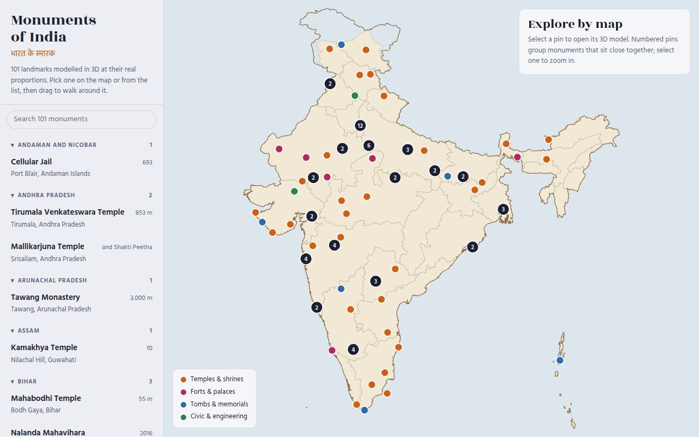
The home view. Numbered pins are clusters; the list on the left is grouped by state.
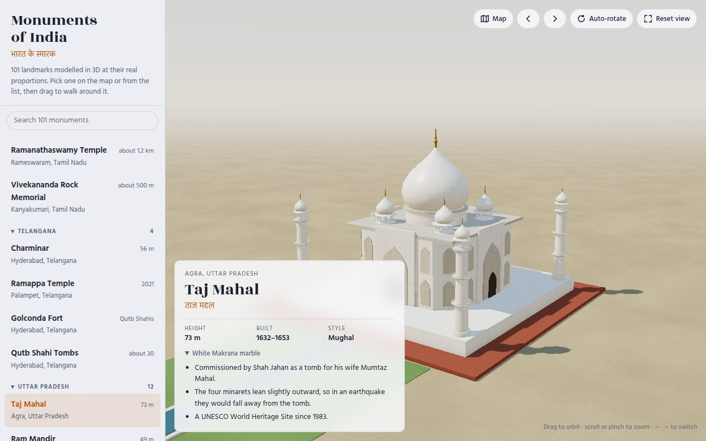
Opening a monument replaces the map with the model. The plaque carries the place, the date, the material and the history.
The 101 monuments
1. Qutub Minar
Mehrauli, Delhi · 1199–1220 · Indo-Islamic
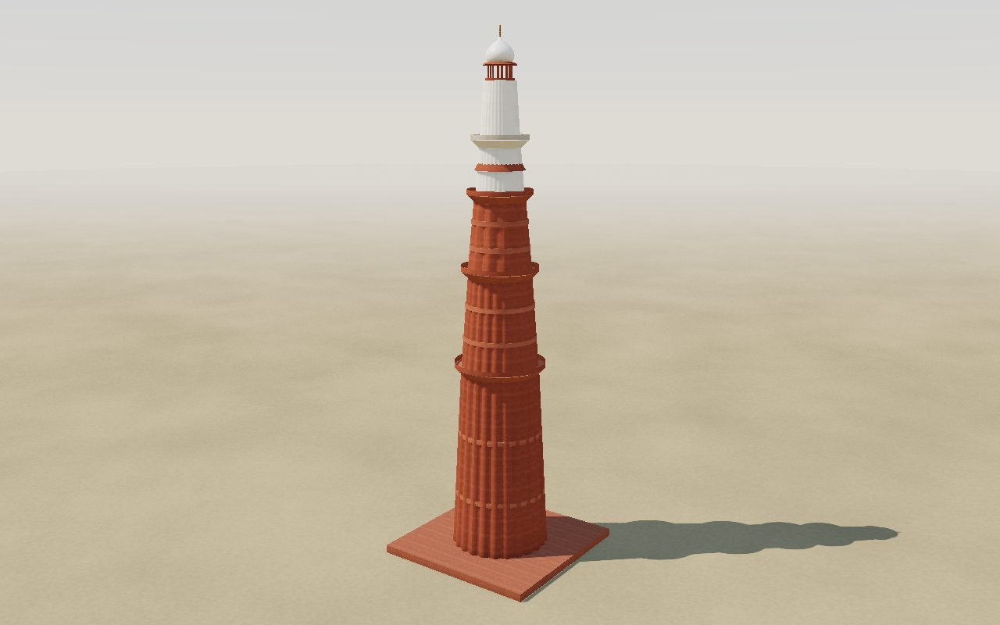
Begun by Qutb ud-Din Aibak and completed by his successor Iltutmish; Firoz Shah Tughlaq later rebuilt the top storeys. Its five storeys taper from a 14.3 m base to 2.7 m at the top, each ringed by a projecting balcony. The Qutb complex has been a UNESCO World Heritage Site since 1993.
2. Gateway of India
Apollo Bunder, Mumbai · 1913–1924 · Indo-Saracenic
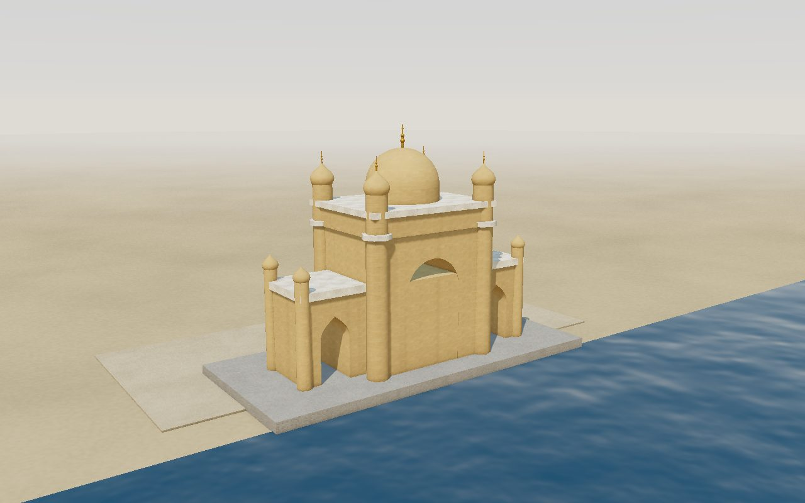
Built to commemorate the 1911 landing of King George V and Queen Mary in Bombay. Designed by the Scottish architect George Wittet, facing the Arabian Sea. The last British troops left India through its arch in February 1948.
3. Taj Mahal
Agra, Uttar Pradesh · 1632–1653 · Mughal
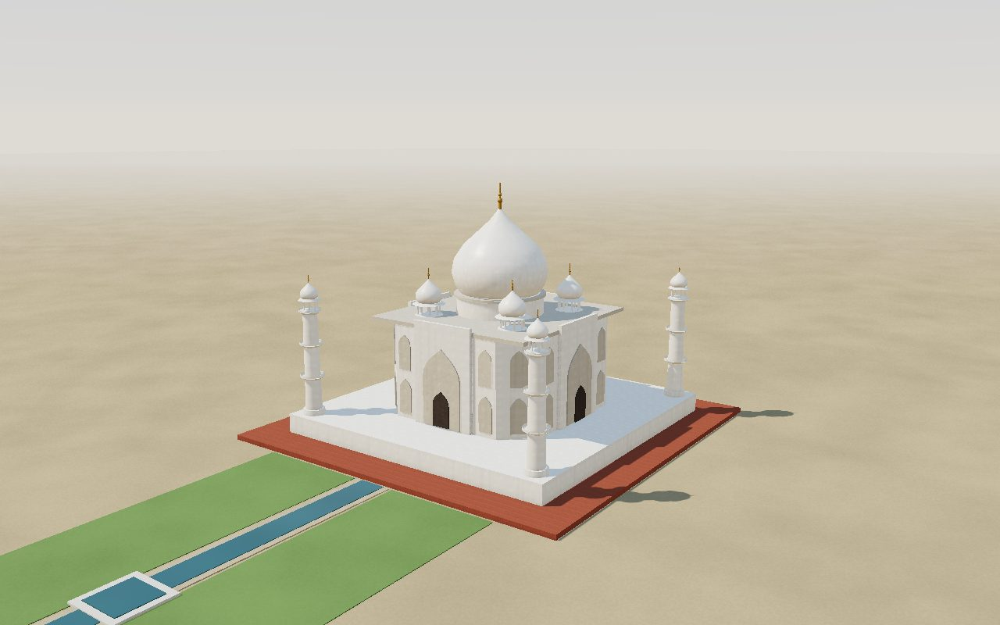
Commissioned by Shah Jahan as a tomb for his wife Mumtaz Mahal. The four minarets lean slightly outward, so in an earthquake they would fall away from the tomb. A UNESCO World Heritage Site since 1983.
4. Charminar
Hyderabad, Telangana · 1591 · Qutb Shahi
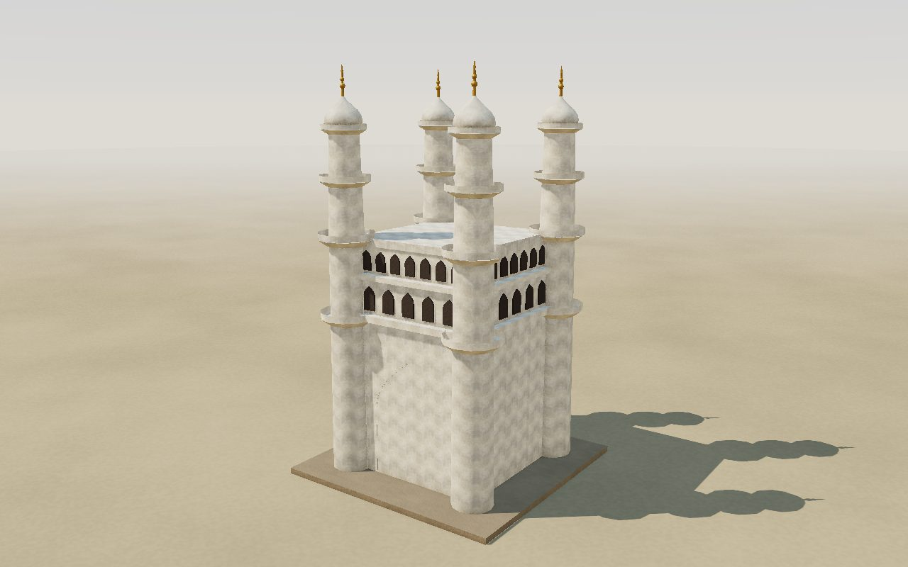
Built by Muhammad Quli Qutb Shah, the founder of Hyderabad. Each of its four sides opens in a grand arch onto a street of the old city. A small mosque occupies the western side of the top floor.
5. Ram Mandir
Ayodhya, Uttar Pradesh · 2020–2024 · Nagara
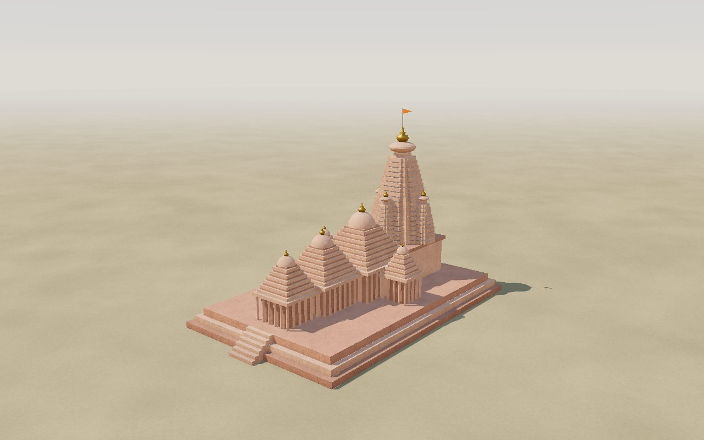
Consecrated on 22 January 2024. Designed by the Sompura family, temple architects for generations. The main structure was built without iron or steel.
6. Brihadeeswara Temple
Thanjavur, Tamil Nadu · 1003–1010 CE · Dravidian (Chola)
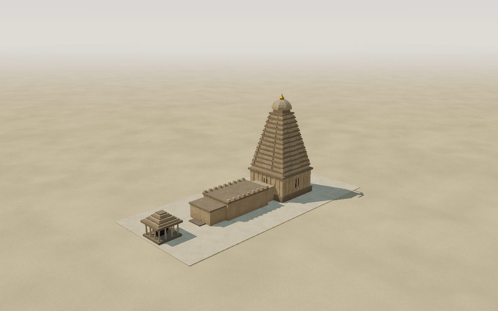
Built by the Chola emperor Rajaraja I. The vimana rises in 13 tiers and is crowned by a capstone estimated at 80 tonnes. Part of the Great Living Chola Temples, a UNESCO site since 1987.
7. India Gate
Kartavya Path, New Delhi · 1921–1931 · Memorial arch
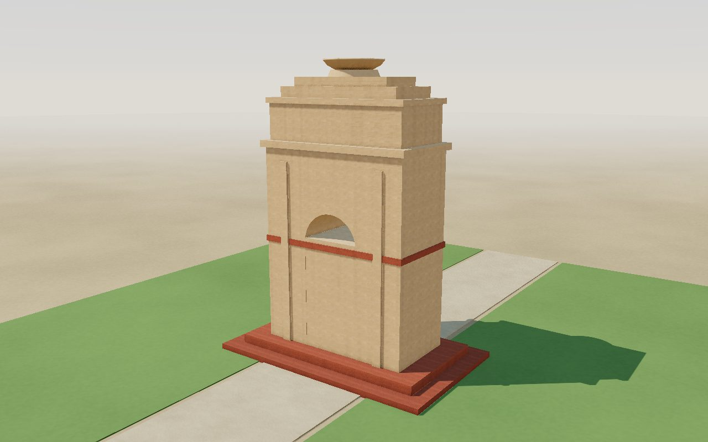
Designed by Edwin Lutyens as the All India War Memorial. It honours soldiers of the British Indian Army who died between 1914 and 1921. More than 13,000 names are inscribed on its surfaces.
8. Statue of Unity
Ekta Nagar, Gujarat · 2013–2018 · Monumental statue
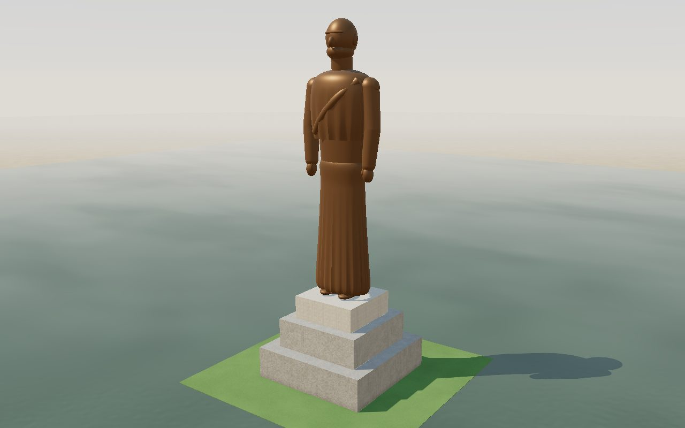
Depicts Sardar Vallabhbhai Patel, India’s first Deputy Prime Minister. The world’s tallest statue, unveiled on 31 October 2018. Designed by the sculptor Ram V. Sutar, it faces the Sardar Sarovar Dam on the Narmada.
9. Howrah Bridge
Kolkata, West Bengal · 1936–1943 · Cantilever truss
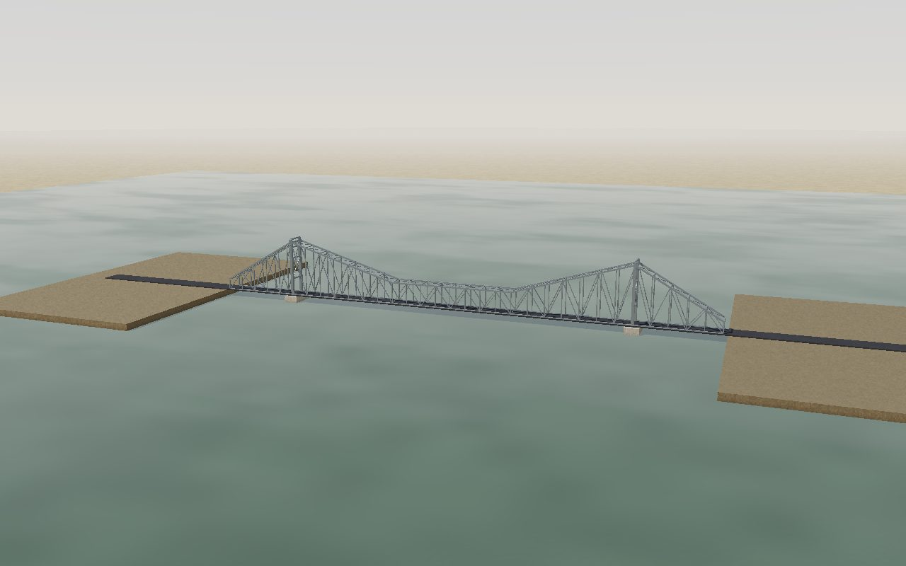
Its 457 m main span crosses the Hooghly with no pier in the river between the two towers. Built with 26,500 tonnes of steel, 23,500 of them high-tensile steel from Tata Steel. Renamed Rabindra Setu in 1965 after Rabindranath Tagore.
10. Jagannath Puri Temple
Puri, Odisha · 12th century · Kalinga
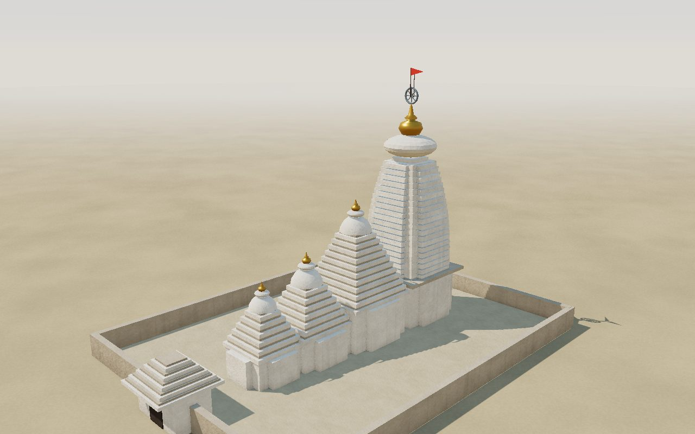
Built by King Anantavarman Chodaganga Deva of the Eastern Ganga dynasty. The flag on its summit is changed every day by a priest who climbs the tower. Each year the Rath Yatra carries the deities through Puri on giant wooden chariots.
11. Golden Temple
Amritsar, Punjab · 1581–1604 · Sikh
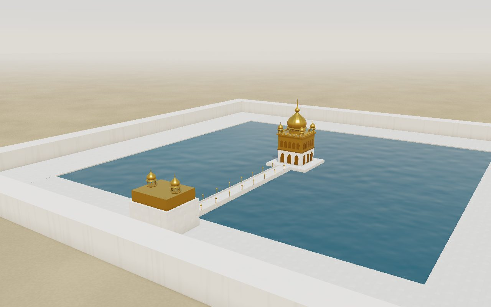
Founded by Guru Arjan, the fifth Sikh Guru, who installed the Adi Granth here in 1604. Its upper storeys were covered in gilded copper under Maharaja Ranjit Singh in the early 19th century. The shrine stands in the Amrit Sarovar pool, reached by a single causeway; its langar serves free meals to tens of thousands of people every day.
12. Hawa Mahal
Jaipur, Rajasthan · 1799 · Rajput
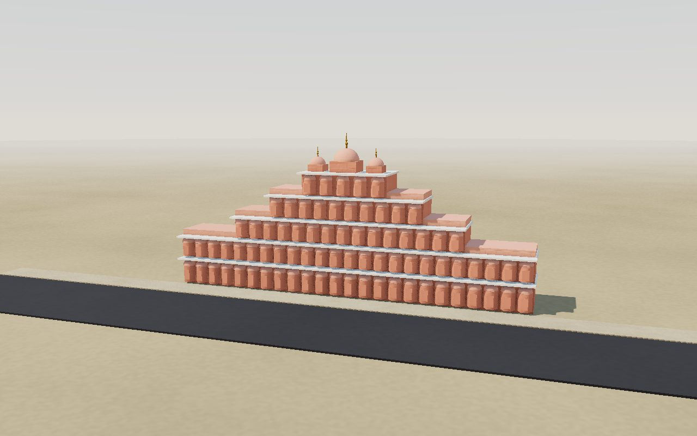
Built by Maharaja Sawai Pratap Singh and designed by Lal Chand Ustad. Its 953 small latticed windows (jharokhas) let the women of the court watch street life unseen. The five-storey façade is barely one room deep; breezes through the screens gave it the name “Palace of Winds”.
13. Konark Sun Temple
Konark, Odisha · c. 1250 CE · Kalinga
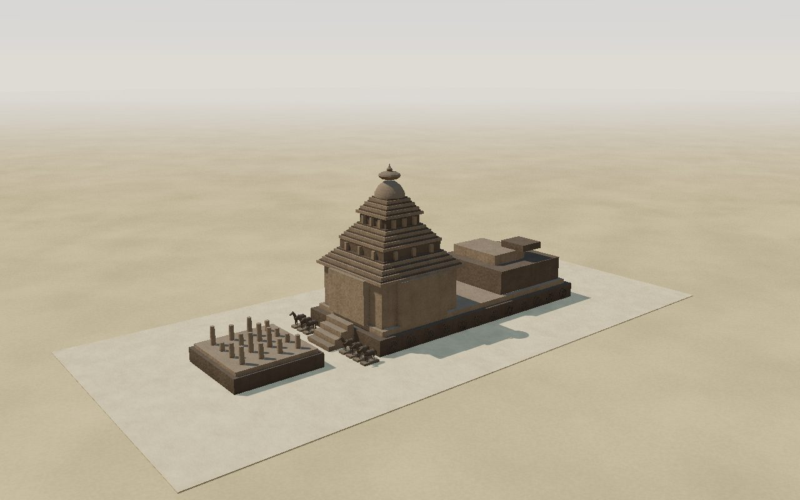
Built by King Narasimhadeva I of the Eastern Ganga dynasty as a giant stone chariot for Surya, the Sun god. Its 24 carved wheels work as sundials: the shadows of the spokes tell the time of day. The main tower collapsed centuries ago; what stands is its porch. A UNESCO World Heritage Site since 1984.
14. Meenakshi Temple
Madurai, Tamil Nadu · 16th–17th c. · Dravidian (Nayak)
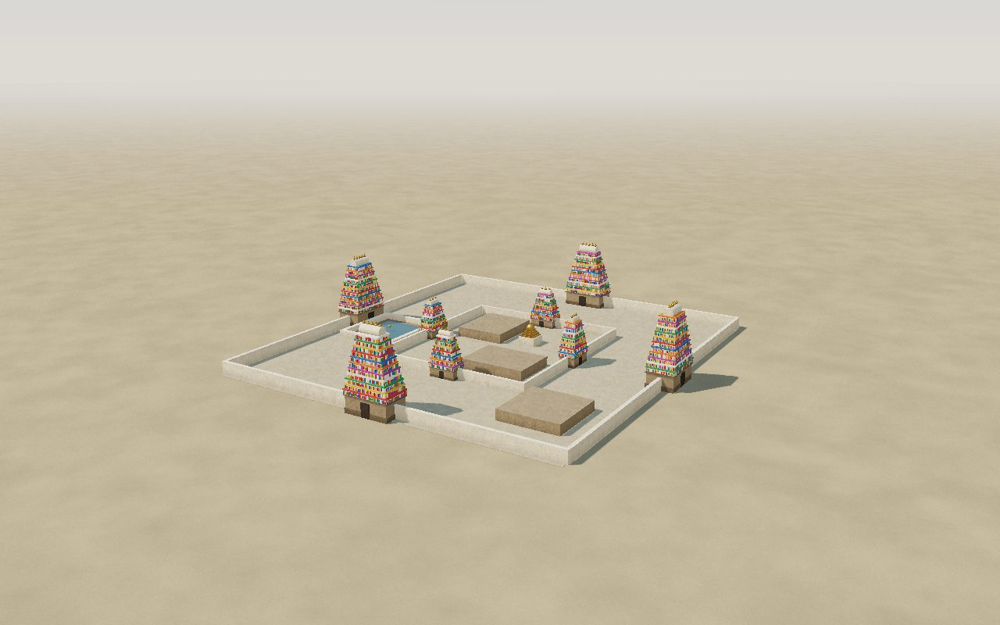
Dedicated to Meenakshi, a form of Parvati, and her consort Sundareswarar, a form of Shiva. Its 14 gopurams are covered in thousands of painted stucco figures of gods, animals and demons. The tallest, the southern gopuram, rises about 52 m above the old city.
15. Lotus Temple
Kalkaji, New Delhi · 1980–1986 · Expressionist
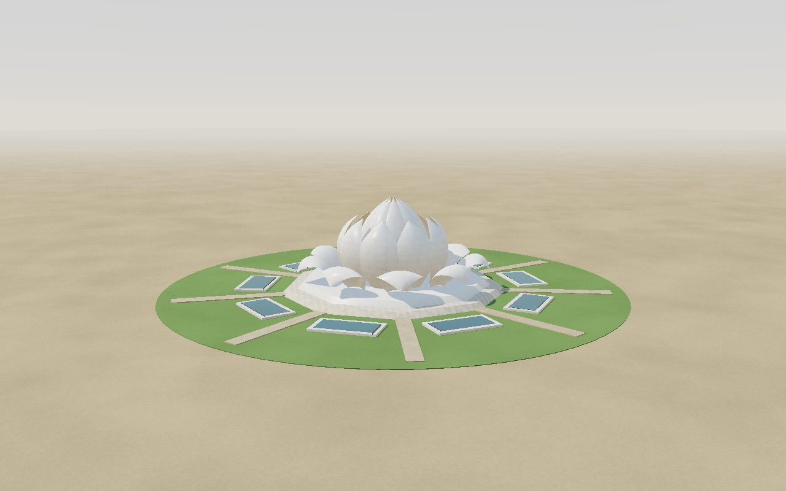
A Baháʼí House of Worship, open to people of every faith. Its 27 free-standing marble-clad petals are arranged in clusters of three to form nine sides. Designed by the Iranian-born architect Fariborz Sahba and surrounded by nine pools.
16. Gol Gumbaz
Vijayapura, Karnataka · 1626–1656 · Deccan (Adil Shahi)
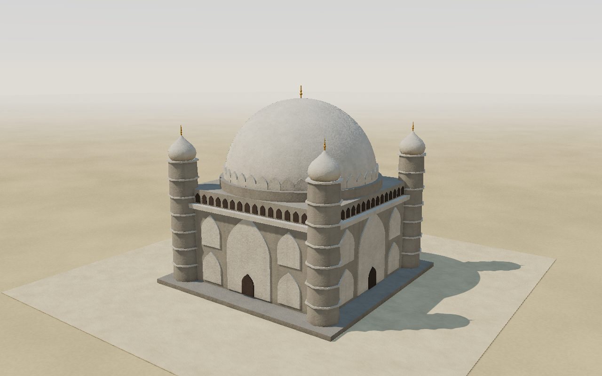
The mausoleum of Muhammad Adil Shah of the Bijapur Sultanate. Its dome, about 44 m across, is one of the largest ever built without internal supports. In the whispering gallery around the inside of the dome, a faint sound echoes several times.
17. Mysore Palace
Mysuru, Karnataka · 1897–1912 · Indo-Saracenic
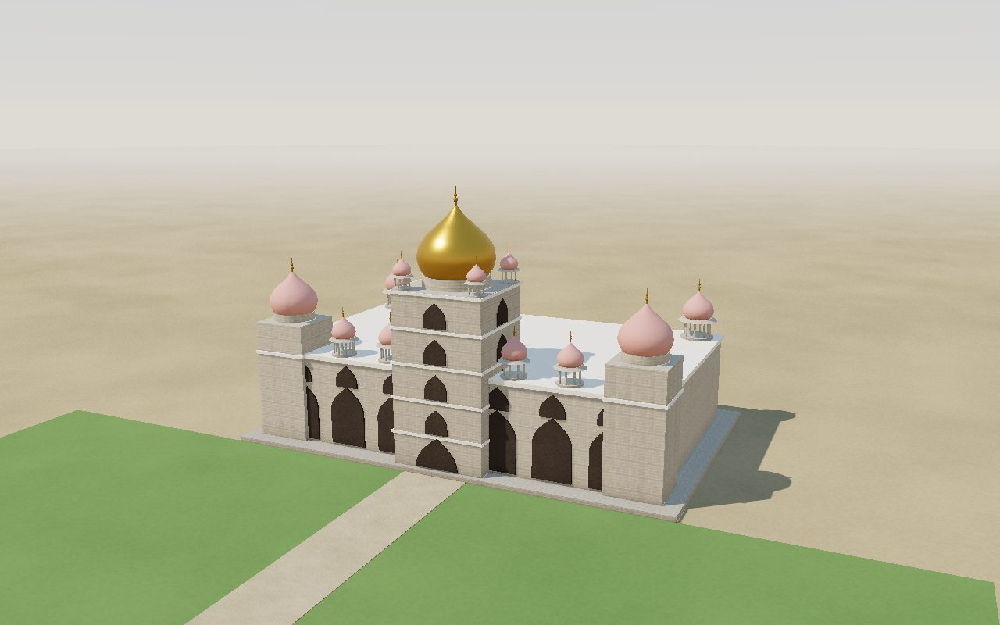
Seat of the Wadiyar dynasty; it replaced an older wooden palace that burned down in 1897. Designed by the British architect Henry Irwin. On festival nights, and through Dasara, it is lit with nearly 100,000 bulbs.
18. Sanchi Stupa
Sanchi, Madhya Pradesh · 3rd c. BCE · Buddhist (Mauryan)
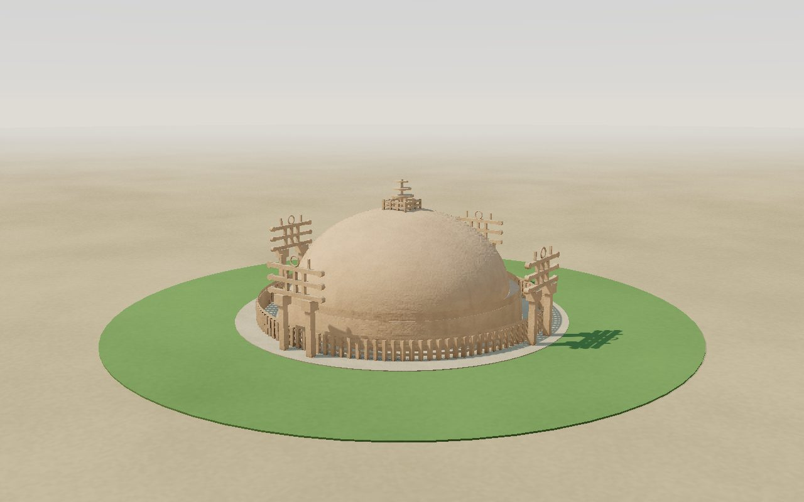
Commissioned by the emperor Ashoka over relics of the Buddha. Its four gateways (toranas), added in the 1st century BCE, are carved with scenes from the Buddha’s life and the Jataka tales. A UNESCO World Heritage Site since 1989.
19. Mahabodhi Temple
Bodh Gaya, Bihar · 5th–6th c. CE · Gupta-era brick
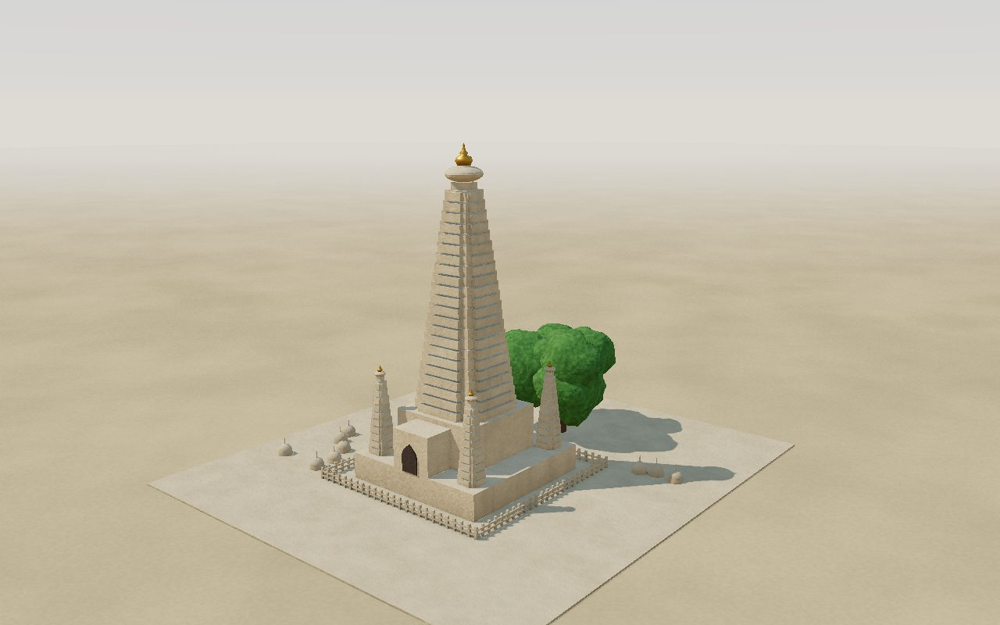
Marks the place where Siddhartha Gautama attained enlightenment under the Bodhi tree. Ashoka built the first shrine here; the present brick temple dates from the Gupta period. One of the oldest brick temples still standing in India, and a UNESCO site since 2002.
20. Red Fort
Old Delhi · 1639–1648 · Mughal
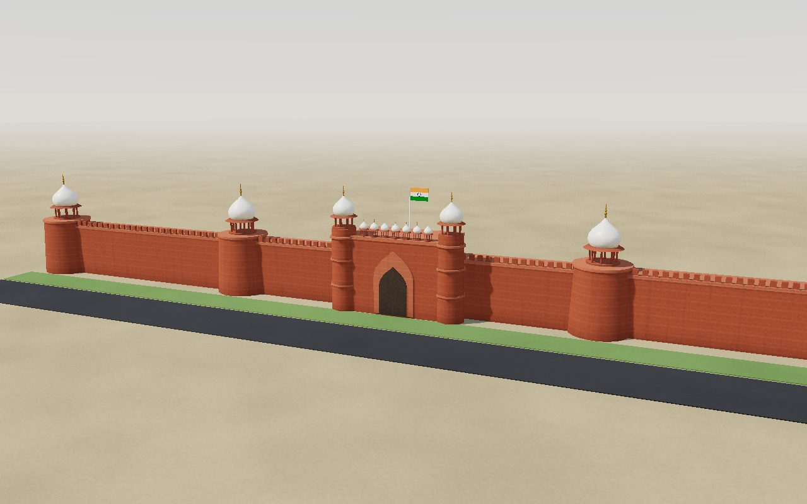
Built by Shah Jahan as the palace-fortress of his new capital, Shahjahanabad. Every Independence Day the Prime Minister raises the national flag here and addresses the nation. Its walls run about 2.5 km; a UNESCO World Heritage Site since 2007.
21. Old Parliament House
Sansad Marg, New Delhi · 1921–1927 · Lutyens’ Delhi
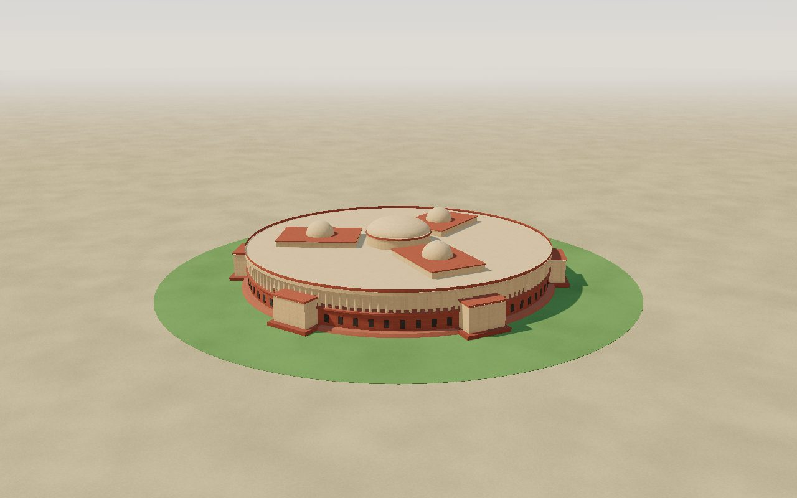
Designed by Edwin Lutyens and Herbert Baker, and opened in 1927. The Constituent Assembly met in its domed Central Hall to frame the Constitution of India. 144 sandstone columns ring its verandah; it was renamed Samvidhan Sadan in 2023.
22. Rashtrapati Bhavan
Raisina Hill, New Delhi · 1912–1929 · Lutyens’ Delhi
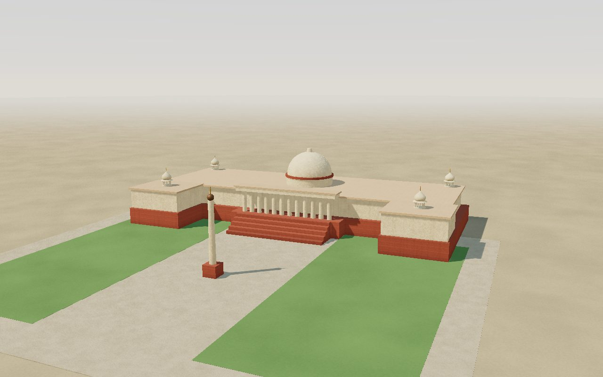
The official residence of the President of India, designed by Edwin Lutyens. It has 340 rooms on four floors. Its great dome blends a classical form with the shape of the Buddhist stupa at Sanchi.
23. Humayun’s Tomb
Nizamuddin, New Delhi · 1565–1572 · Mughal
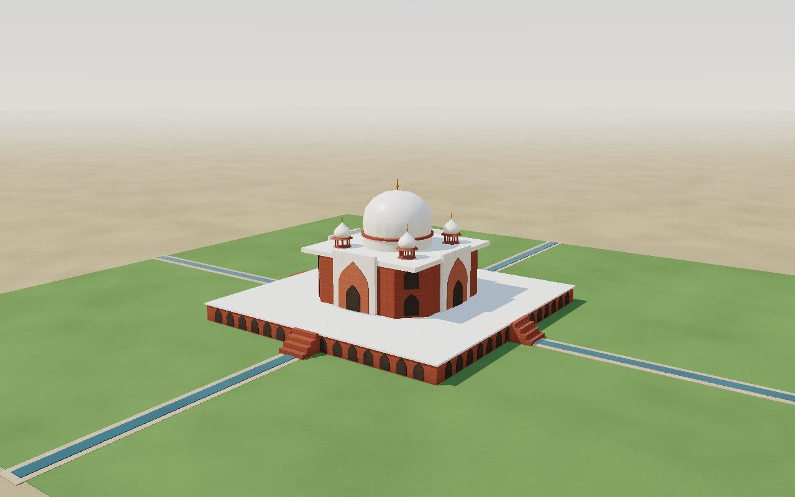
Commissioned by Humayun’s widow, Empress Bega Begum, and designed by Mirak Mirza Ghiyas. The first garden-tomb on the Indian subcontinent, and a model for the Taj Mahal. A UNESCO World Heritage Site since 1993.
24. Jama Masjid
Chandni Chowk, Old Delhi · 1650–1656 · Mughal
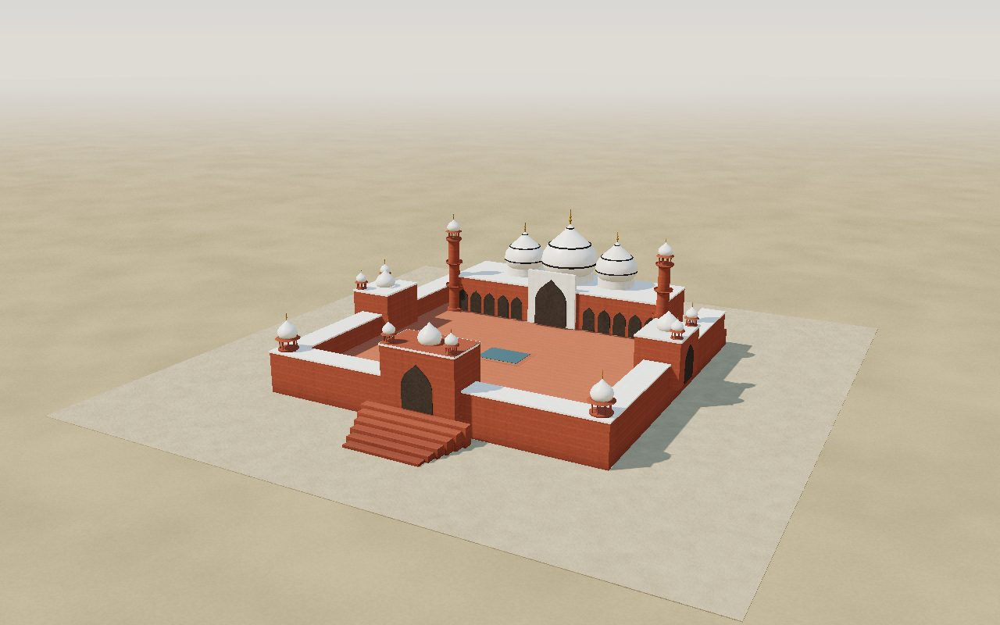
Built by Shah Jahan, facing the Red Fort across the old city. Its courtyard can hold about 25,000 worshippers. Three marble domes striped in black crown the prayer hall, flanked by two tall minarets.
25. New Parliament House
Sansad Marg, New Delhi · 2020–2023 · Contemporary
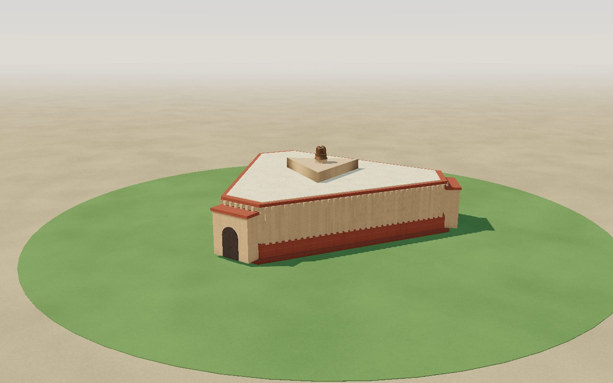
Inaugurated on 28 May 2023, beside the 1927 building it replaced. Its triangular plan was designed by the architect Bimal Patel. A 6.5 m bronze National Emblem crowns the roof above the central Constitution Hall.
26. Dilwara Temples
Mount Abu, Rajasthan · 11th–13th c. · Jain (Maru-Gurjara)
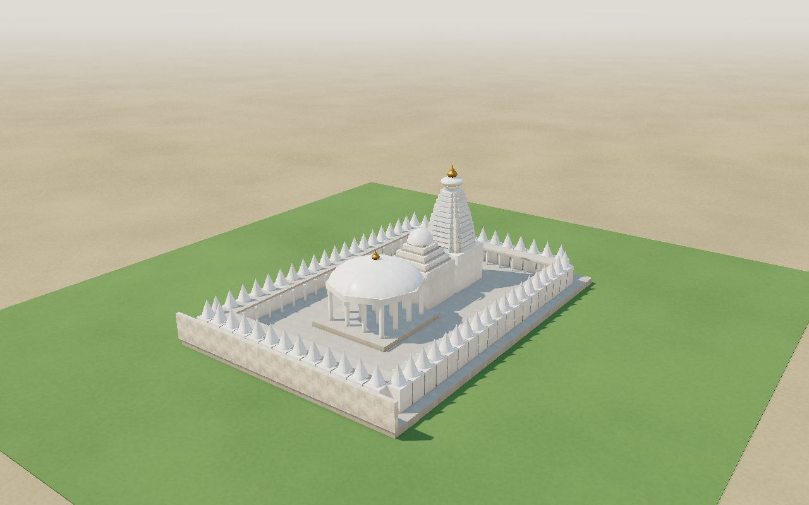
The oldest, Vimal Vasahi, was built in 1031 by Vimal Shah, a minister of the Chaulukya king. The marble is carved so finely it looks translucent; the domed ceilings hang down in lotus pendants. A plain outer wall hides the temples and the rows of shrine cells around their courtyards.
27. Swaminarayan Akshardham
New Delhi · 2000–2005 · Maru-Gurjara
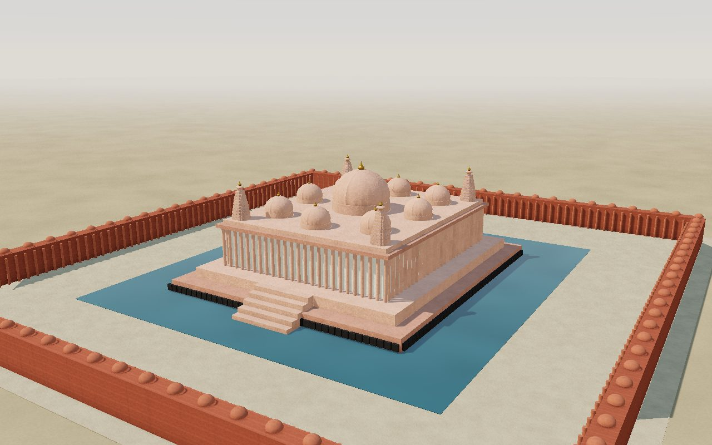
Opened in November 2005 by the BAPS Swaminarayan Sanstha. The main monument has 234 carved pillars, nine domes and more than 20,000 sculpted figures. It rests on the Gajendra Pith, a plinth carved with 148 life-size elephants.
28. Kandariya Mahadeva Temple
Khajuraho, Madhya Pradesh · c. 1030 CE · Nagara (Chandela)
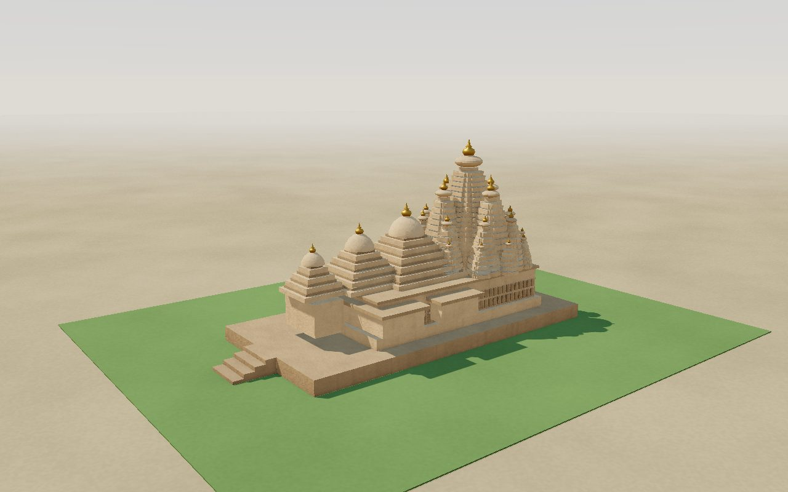
The largest temple at Khajuraho, built under the Chandela dynasty. Its tower is wrapped in 84 smaller spires that rise like the peaks of Mount Kailash. Over 800 sculptures cover its walls; Khajuraho has been a UNESCO site since 1986.
29. Ranakpur Jain Temple
Ranakpur, Rajasthan · 15th century · Jain (Maru-Gurjara)
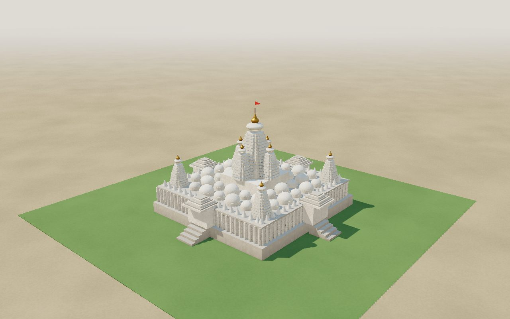
Built by the merchant Dharna Shah from 1437 and dedicated to Adinatha. Its 1,444 carved marble pillars are said to be all different. A four-faced (chaturmukha) temple, open on all four sides.
30. Chennakesava Temple
Somanathapura, Karnataka · 1258 · Hoysala
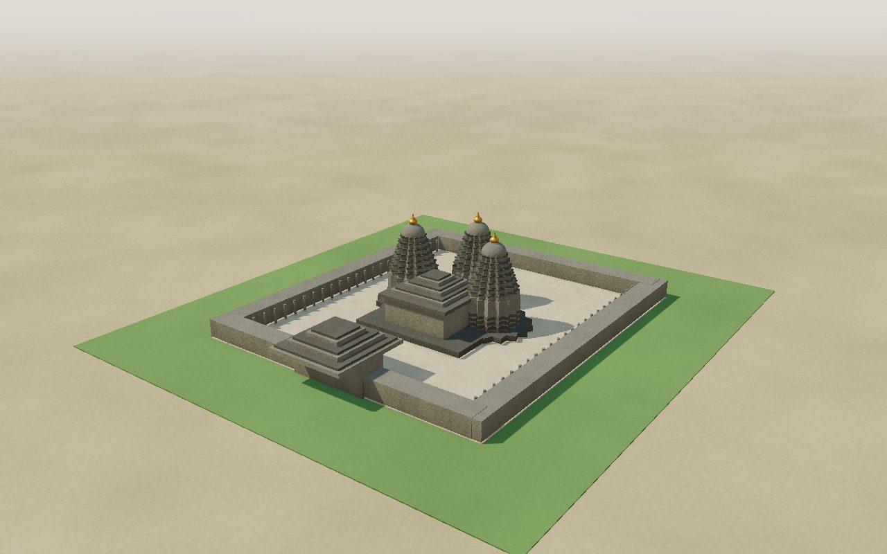
Built by Somanatha, a commander of the Hoysala king Narasimha III. Three star-shaped shrines stand on a raised, star-shaped platform. Friezes of elephants, horsemen and epic scenes run round its base; a UNESCO site since 2023.
31. Victoria Memorial
Maidan, Kolkata · 1906–1921 · Indo-Saracenic
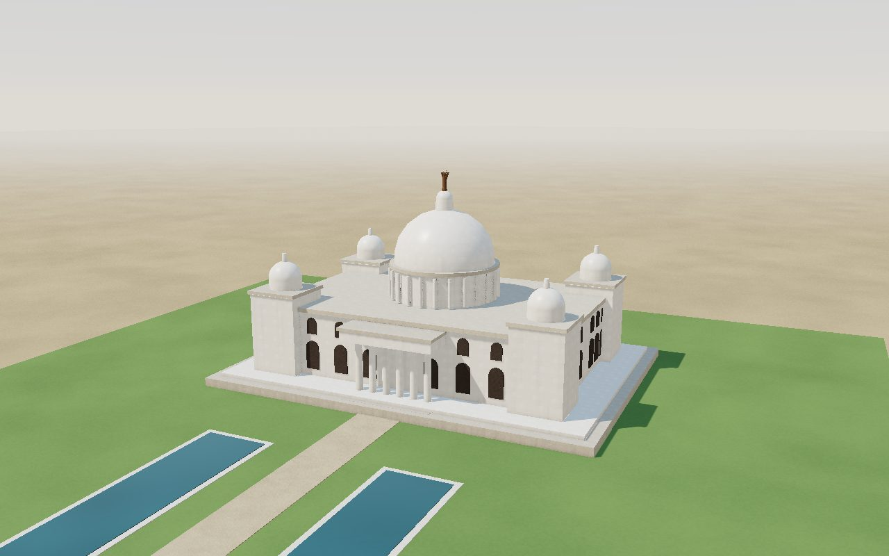
Built in memory of Queen Victoria and designed by William Emerson. It is clad in white Makrana marble, the same stone as the Taj Mahal. A bronze Angel of Victory, about 4.9 m tall, turns with the wind on top of the dome.
32. Chhatrapati Shivaji Maharaj Terminus
Fort, Mumbai · 1878–1888 · Victorian Gothic
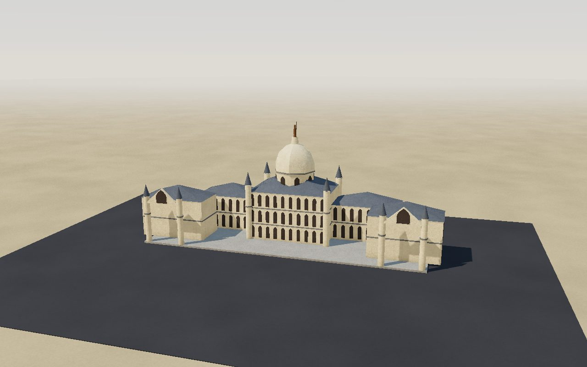
Designed by Frederick William Stevens and opened as Victoria Terminus in 1887, the year of Queen Victoria’s Golden Jubilee. It blends Victorian Gothic Revival with traditional Indian architecture. A statue representing Progress stands on the central dome; a UNESCO World Heritage Site since 2004.
33. Kailasa Temple, Ellora
Ellora, Maharashtra · 8th century · Dravidian (Rashtrakuta)
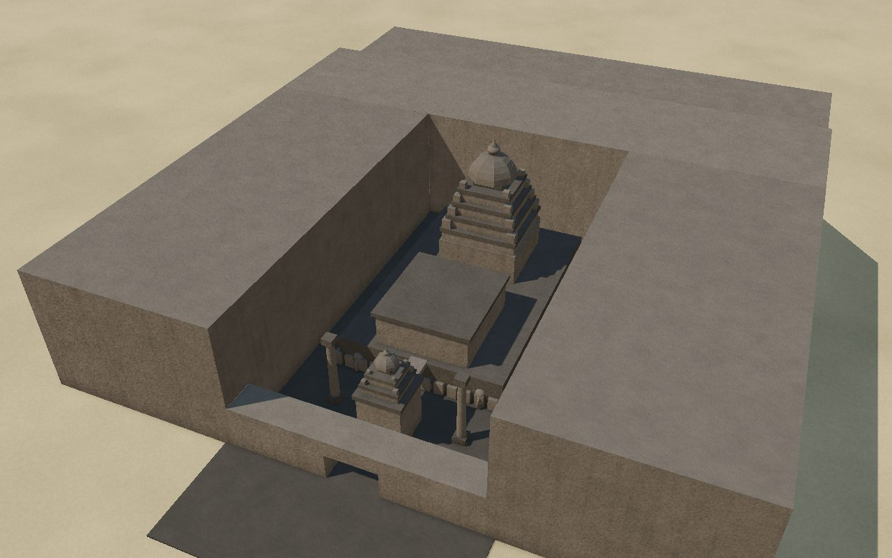
Carved out of a single basalt cliff under the Rashtrakuta king Krishna I. Sculptors cut downward from the top, removing an estimated 200,000 tonnes of rock. It is Cave 16 of the Ellora Caves, a UNESCO World Heritage Site since 1983.
34. Vittala Temple, Hampi
Hampi, Karnataka · 15th–16th c. · Vijayanagara
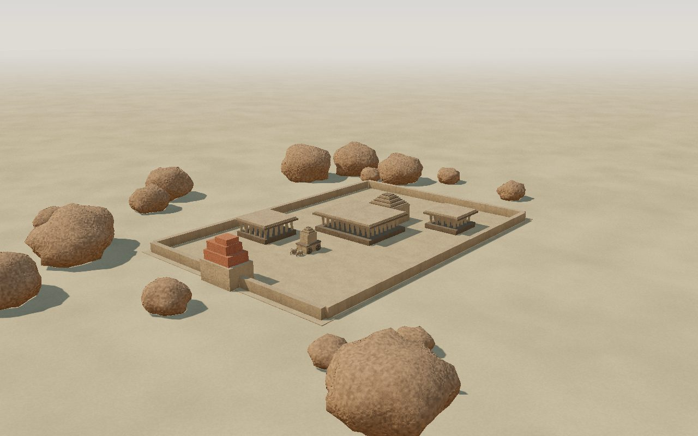
Built in Vijayanagara, the capital of the Vijayanagara Empire, among Hampi’s granite boulders. The stone chariot in its courtyard is a shrine to Garuda, carved to look like a temple car. The main hall’s 56 pillars ring with musical notes when tapped; Hampi is a UNESCO site since 1986.
35. Padmanabhaswamy Temple
Thiruvananthapuram, Kerala · 16th–18th c. · Dravidian and Kerala
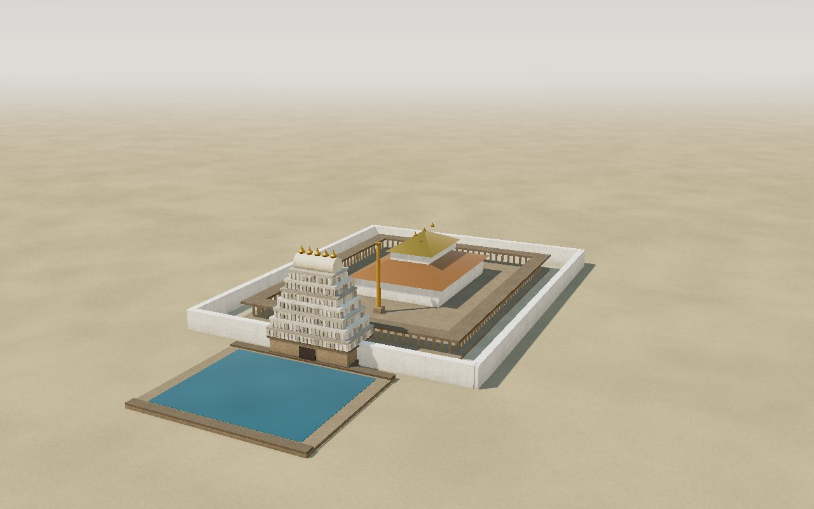
Dedicated to Vishnu as Padmanabha, reclining on the serpent Anantha. Its seven-tier eastern gopuram rises over the Padma Theertham tank. A long corridor of carved granite pillars runs round the inner shrine.
36. Basilica of Bom Jesus
Old Goa, Goa · 1594–1605 · Baroque
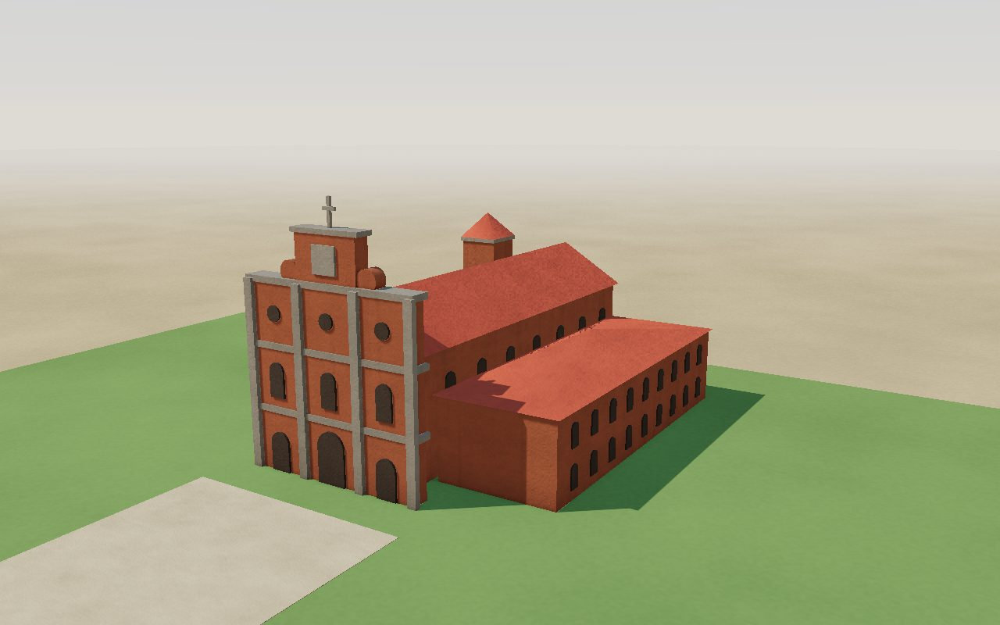
Completed by the Jesuits in 1605, it holds the remains of St Francis Xavier. Its lime plaster was stripped away in the 20th century, exposing the red laterite stone. Part of the Churches and Convents of Goa, a UNESCO World Heritage Site since 1986.
37. Kamakhya Temple
Nilachal Hill, Guwahati · Rebuilt 1565 · Nilachal
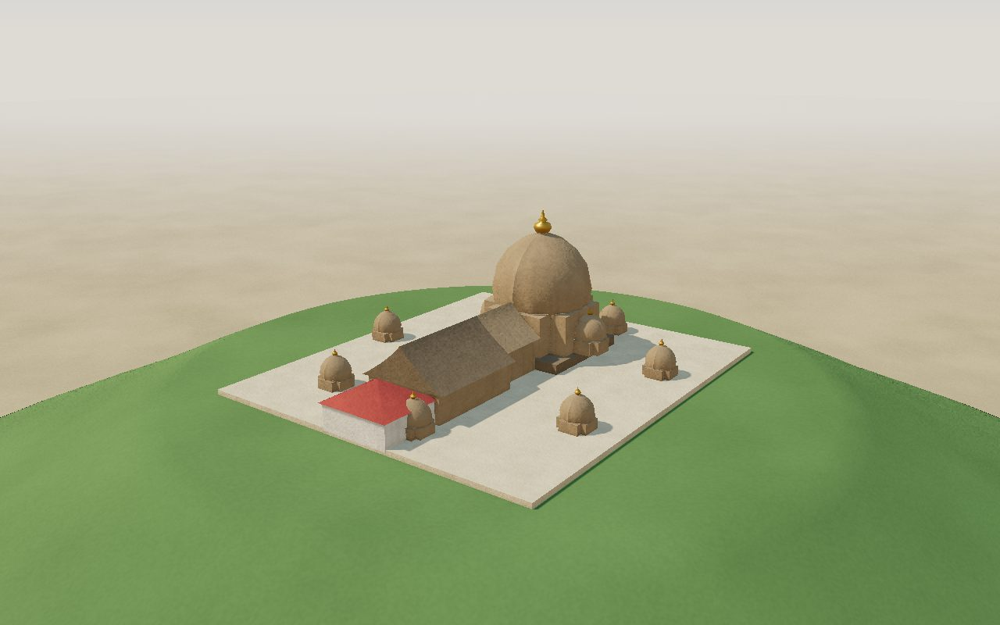
One of the most revered Shakti peethas, on Nilachal Hill above the Brahmaputra. Rebuilt in 1565 under the Koch dynasty, with the beehive-shaped dome of the Nilachal style. Each June the Ambubachi Mela draws pilgrims from across India.
38. Tawang Monastery
Tawang, Arunachal Pradesh · 1680–1681 · Tibetan Buddhist
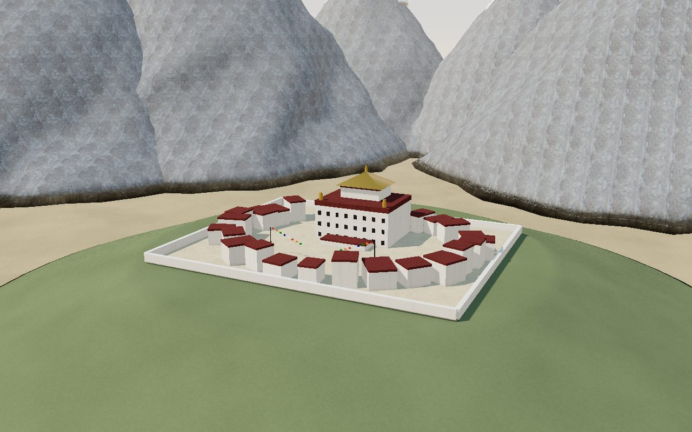
Founded by Merak Lama Lodre Gyatso at the wish of the 5th Dalai Lama. The largest Buddhist monastery in India, on a ridge about 3,000 m up. Its three-storey assembly hall houses a gilded statue of the Buddha about 8 m tall.
39. Amber Fort
Amer, Jaipur · 16th–18th c. · Rajput and Mughal
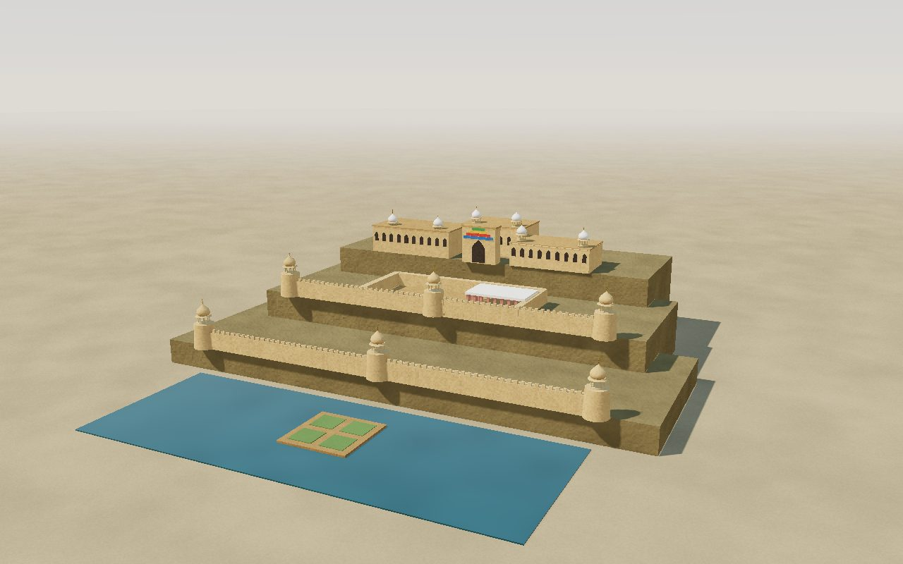
Begun in 1592 by Raja Man Singh I, a general of the Mughal emperor Akbar. Its Sheesh Mahal, the mirror palace, is lined with thousands of tiny mirrors. One of the Hill Forts of Rajasthan, a UNESCO World Heritage Site since 2013.
40. Rani ki Vav
Patan, Gujarat · 11th century · Maru-Gurjara
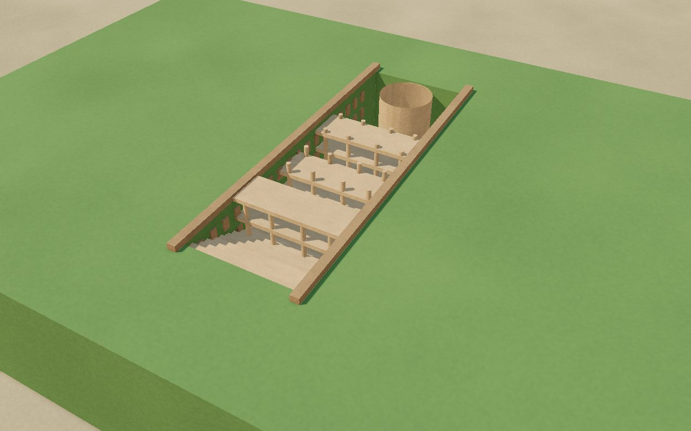
A stepwell built in memory of the Chaulukya king Bhima I, traditionally by his queen Udayamati. It descends seven levels and holds more than 500 principal sculptures, many of Vishnu’s avatars. A UNESCO World Heritage Site since 2014; it appears on the ₹100 note.
41. Ramappa Temple
Palampet, Telangana · 1213 CE · Kakatiya
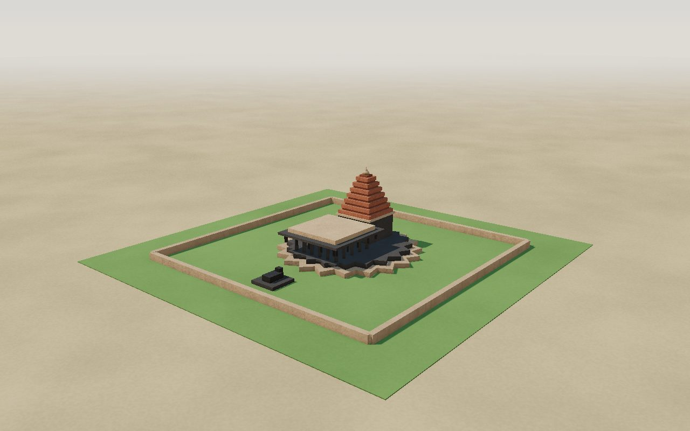
Built in 1213 by Recherla Rudra, a general of the Kakatiya king Ganapati Deva. It is named after its chief sculptor, Ramappa, which is rare for an Indian temple. Its tower is built of bricks light enough to float on water; a UNESCO World Heritage Site since 2021.
42. Kedarnath Temple
Kedarnath, Uttarakhand · 8th c. (by tradition) · Himalayan Nagara
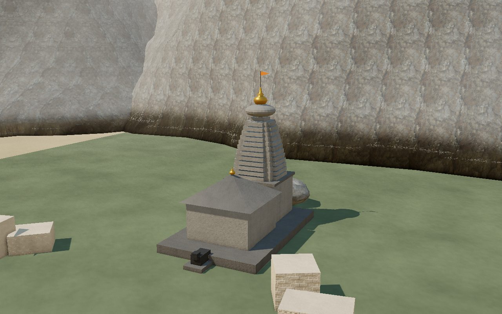
One of the twelve Jyotirlingas of Shiva, high in the Garhwal Himalaya. Built of large grey stone slabs; tradition links its revival to Adi Shankaracharya. In the 2013 floods a huge boulder lodged behind it and shielded the temple.
43. Hazratbal Shrine
Srinagar, Jammu and Kashmir · 1968–1979 · Mughal-inspired
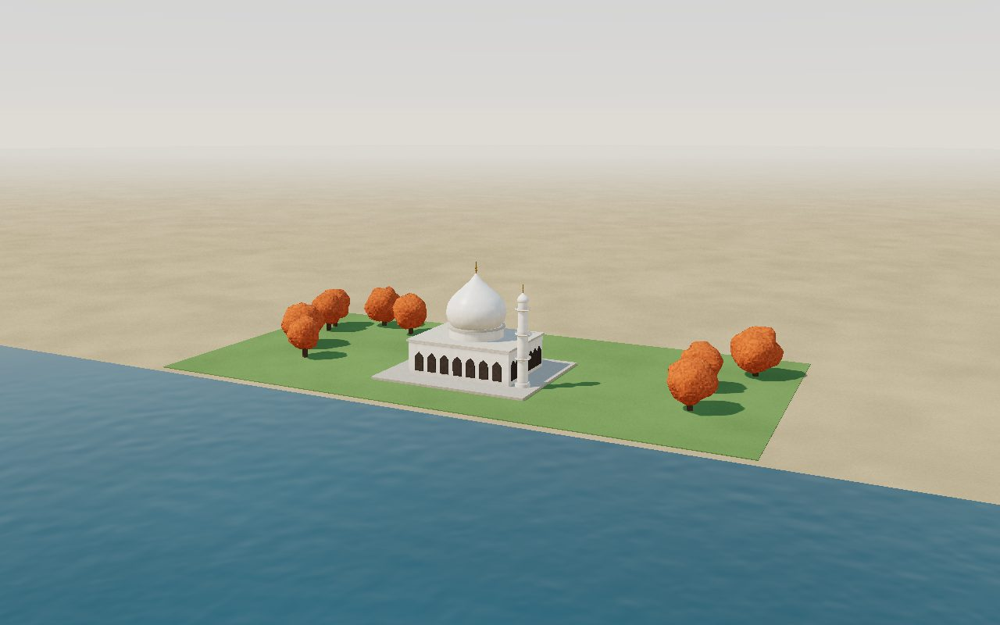
It stands on the north-western shore of Dal Lake in Srinagar. It houses the Moi-e-Muqqadas, a relic believed to be a hair of the Prophet Muhammad. The present white marble shrine, completed in 1979, is known as the only domed mosque in Srinagar.
44. Shore Temple
Mahabalipuram, Tamil Nadu · c. 700–728 CE · Dravidian (Pallava)
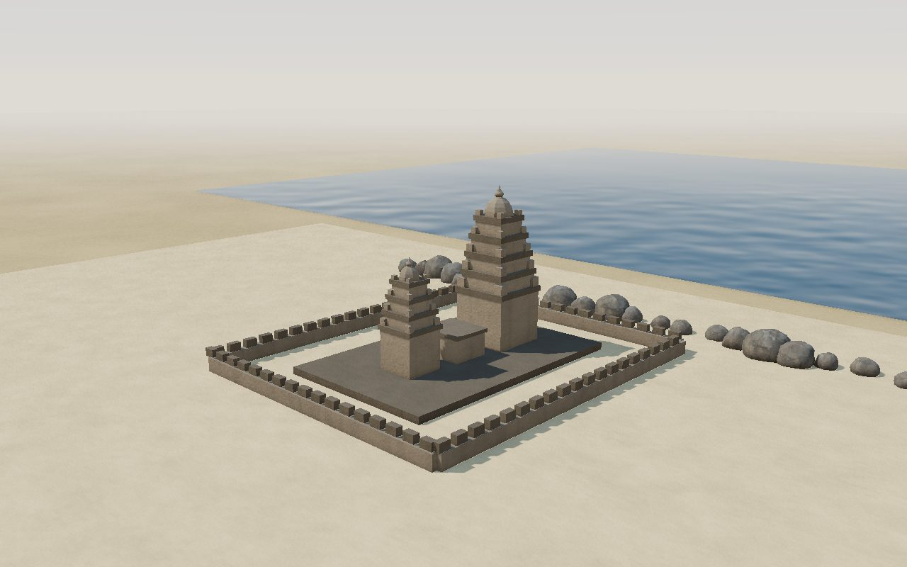
Built by the Pallava king Narasimhavarman II (Rajasimha) beside the Bay of Bengal. One of the oldest structural stone temples in South India: two Shiva shrines and one to Vishnu. Part of the Group of Monuments at Mahabalipuram, a UNESCO World Heritage Site since 1984.
45. Gwalior Fort
Gwalior, Madhya Pradesh · 8th–16th c. · Rajput (Tomar)
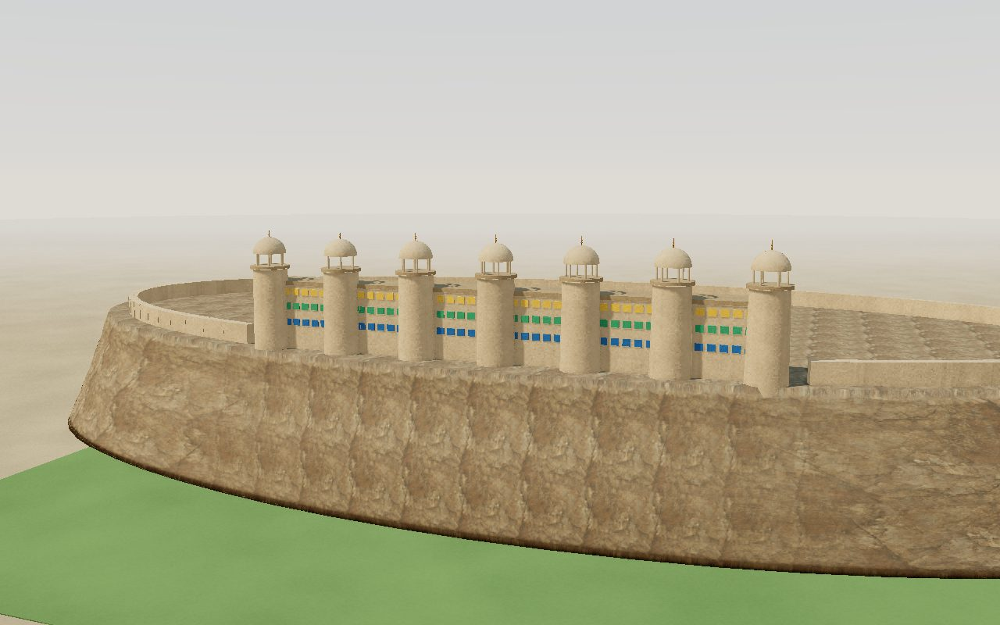
Raja Man Singh Tomar built the Man Mandir palace on the fort between 1486 and 1516. Its walls are decorated with blue, green and yellow tiles of ducks, elephants and banana trees. The fort crowns a sandstone hill above Gwalior; Babur is said to have called it the pearl among India’s forts.
46. Nalanda Mahavihara
Nalanda, Bihar · 5th–12th c. · Gupta and Pala brick
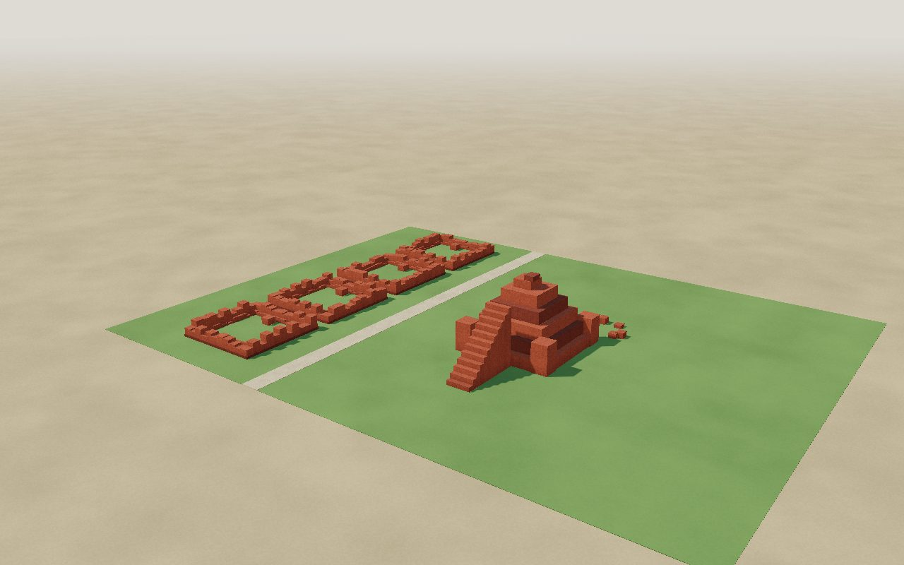
Founded in the 5th century CE under the Gupta kings, it was one of the world’s first residential universities. Scholars came from China, Korea, Tibet and Central Asia; the pilgrim Xuanzang studied here. Its brick ruins include the stepped Sariputta Stupa; a UNESCO World Heritage Site since 2016.
47. Tirumala Venkateswara Temple
Tirumala, Andhra Pradesh · Expanded 9th–16th c. · Dravidian
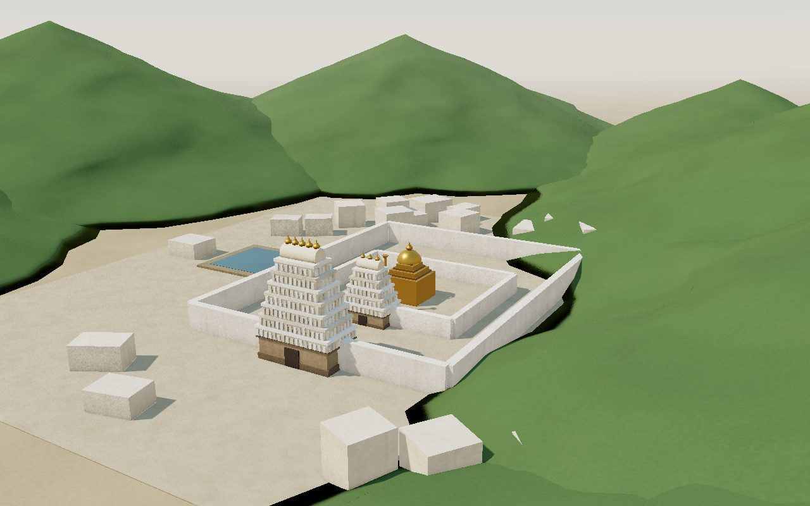
Dedicated to Venkateswara, a form of Vishnu, on the Tirumala hills. The vimana over the sanctum, called Ananda Nilayam, is covered in gold. It is one of the most visited places of worship in the world.
48. Capitol Complex, Chandigarh
Sector 1, Chandigarh · 1951–1965 · Modernist
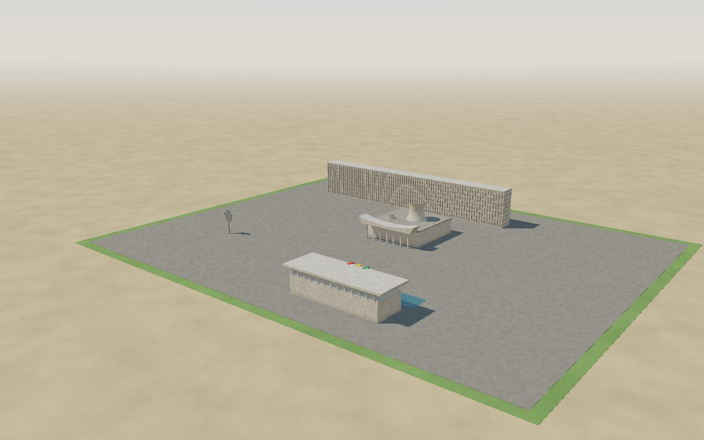
Designed by Le Corbusier as the seat of government for Chandigarh, the new capital of Punjab. Its Palace of Assembly, Secretariat and High Court face each other across a vast concrete plaza. The Open Hand Monument turns in the wind; the complex became a UNESCO World Heritage Site in 2016.
49. Hidimba Devi Temple
Manali, Himachal Pradesh · 1553 · Himalayan pagoda
Built in 1553 by Maharaja Bahadur Singh over a cave shrine to Hidimba Devi. Its three square roofs of wooden shingles are crowned by a brass cone. It stands in the Dhungiri forest of tall deodar cedars above Manali.
50. Bandra–Worli Sea Link
Mumbai, Maharashtra · 2000–2009 · Cable-stayed bridge
Opened in 2009, it links Bandra and Worli across Mahim Bay. Its cable-stayed main span hangs from pylons about 128 m tall. Officially the Rajiv Gandhi Sea Link, it carries eight lanes of traffic.
51. Buland Darwaza
Fatehpur Sikri, Uttar Pradesh · c. 1575–1601 · Mughal
Akbar built it as the great southern gateway to the Jama Masjid of Fatehpur Sikri. Including its broad flight of steps, it rises about 54 m above the ground. An inscription on it quotes a saying of Jesus: the world is a bridge, so pass over it. Fatehpur Sikri is a UNESCO site since 1986.
52. Panch Mahal
Fatehpur Sikri, Uttar Pradesh · 1570s · Mughal
A five-storey open pavilion in Akbar’s palace at Fatehpur Sikri, built to catch the breeze. Each storey is smaller than the one below, rising to a single domed kiosk on top. It stands on 176 carved columns; stone screens once enclosed its open sides.
53. Bara Imambara
Lucknow, Uttar Pradesh · 1784–1791 · Nawabi (Awadhi)
Built by Nawab Asaf-ud-Daula, partly as a relief project during the famine of 1784. Its vaulted central hall is one of the largest arched halls in the world built without beams. Above it lies the Bhool Bhulaiya, a maze of narrow passages; the Asfi Mosque stands beside it.
54. Rumi Darwaza
Lucknow, Uttar Pradesh · 1784 · Nawabi (Awadhi)
Built by Nawab Asaf-ud-Daula beside the Bara Imambara. Often called the Turkish Gate, it is said to be modelled on the Sublime Porte in Istanbul. A flared, flower-like crown rises above its arch, topped by an eight-sided kiosk.
55. Chota Imambara
Lucknow, Uttar Pradesh · 1837–1838 · Nawabi (Awadhi)
Built by Nawab Muhammad Ali Shah as his own mausoleum and a hall for Muharram gatherings. It is famed for its chandeliers and gilt mirrors; black Quranic calligraphy runs along its white facade. Two small replicas of the Taj Mahal stand in its garden.
56. Itmad-ud-Daulah’s Tomb
Agra, Uttar Pradesh · 1622–1628 · Mughal
Built by the empress Nur Jahan for her father, Mirza Ghiyas Beg. The first Mughal tomb faced entirely in white marble, it is often called the Baby Taj. Its walls are inlaid with coloured stone in the pietra dura technique, later used at the Taj Mahal.
57. Akbar’s Tomb
Sikandra, Agra · 1605–1613 · Mughal
Akbar began his own tomb; his son Jahangir completed it in 1613. Its five storeys rise in tiers of kiosks to a white marble terrace open to the sky. The southern gateway carries four white marble minarets, the first on a Mughal gateway.
58. Agra Fort
Agra, Uttar Pradesh · 1565–1573 · Mughal
Akbar rebuilt the fort in red sandstone between 1565 and 1573. Shah Jahan added white marble palaces and spent his last years confined here, within sight of the Taj Mahal. A UNESCO World Heritage Site since 1983.
59. Bibi Ka Maqbara
Chhatrapati Sambhajinagar, Maharashtra · 1660s · Mughal
Built by Prince Azam Shah in memory of his mother, Dilras Banu Begum, wife of Aurangzeb. Modelled on the Taj Mahal, it is known as the Taj of the Deccan. Only the dome is marble; most of the rest is basalt finished with fine lime plaster.
60. Safdarjung’s Tomb
Lodhi Road, New Delhi · 1754 · Late Mughal
Built in 1754 by Nawab Shuja-ud-Daula for his father Safdarjung, prime minister of the Mughal empire. It is often called the last great garden tomb of the Mughals. It stands in a walled charbagh garden with water channels and corner pavilions.
61. Somnath Temple
Prabhas Patan, Gujarat · Rebuilt 1951 · Maru-Gurjara (Chalukya)
Revered as the first of the twelve Jyotirlingas, on the Arabian Sea coast. Destroyed and rebuilt many times; the present temple was completed in 1951. An arrow pillar on its sea wall marks that no land lies in a straight line between it and the South Pole.
62. Mallikarjuna Temple
Srisailam, Andhra Pradesh · Expanded 14th–16th c. · Dravidian
On Srisailam hill in the Nallamala forest, above the Krishna river. It is both a Jyotirlinga and a Shakti Peetha, with the shrine of the goddess Bhramaramba. Its high outer walls are carved with friezes; its gopurams were raised under Vijayanagara rulers.
63. Mahakaleshwar Temple
Ujjain, Madhya Pradesh · Rebuilt 18th c. · Bhumija and Maratha
Beside the Shipra river in Ujjain; its lingam is the only Jyotirlinga that faces south. Its Bhasma Aarti, offered with sacred ash before dawn each day, is famous. The temple has three levels; the Nagchandreshwar shrine on top opens only on Nag Panchami.
64. Omkareshwar Temple
Mandhata island, Madhya Pradesh · Rebuilt 18th c. · Nagara
On Mandhata island in the Narmada, which is said to be shaped like the sacred syllable Om. Pilgrims reach the island by bridge or boat and bathe at its ghats. Mamleshwar, across the river, is worshipped together with it as one Jyotirlinga.
65. Bhimashankar Temple
Sahyadri hills, Maharashtra · 13th–18th c. · Nagara
In the forested Sahyadri hills, at the source of the Bhima river. Its stone temple combines older Nagara work with an 18th-century hall added by Nana Phadnavis. The forest around it is a wildlife sanctuary, home of the Indian giant squirrel.
66. Kashi Vishwanath Temple
Varanasi, Uttar Pradesh · 1780 · Nagara
The present temple was built in 1780 by the Maratha queen Ahilyabai Holkar. Maharaja Ranjit Singh had its spire and dome covered in gold in 1835. The Kashi Vishwanath Corridor, opened in 2021, links it directly to the ghats of the Ganga.
67. Trimbakeshwar Temple
Trimbak, Nashik · 1755–1786 · Nagara
Built in black basalt by the Peshwa Balaji Bajirao between 1755 and 1786. Its lingam has three faces, for Brahma, Vishnu and Shiva. It stands below the Brahmagiri hills, where the Godavari river rises.
68. Baidyanath Temple
Deoghar, Jharkhand · 16th c. (present form) · Nagara
The Baba Baidyanath Dham complex in Deoghar has 22 temples; it is also a Shakti Peetha. Its spire is crowned by a panchashula, a five-pointed trident, instead of the usual trishula. In the month of Shravan, pilgrims walk over 100 km carrying Ganga water to offer here.
69. Nageshwar Temple
Dwarka, Gujarat · Rebuilt 1990s · Nagara
On the road between Dwarka and Beyt Dwarka on the Saurashtra coast. A 25 m statue of a seated Shiva rises in the temple garden. Nageshwar means lord of serpents; devotees pray here for protection from poisons.
70. Ramanathaswamy Temple
Rameswaram, Tamil Nadu · 12th–17th c. · Dravidian
On Rameswaram island; tradition says Rama worshipped Shiva here before crossing to Lanka. Its pillared corridors, about 1.2 km in all, are the longest of any Hindu temple. Pilgrims bathe in 22 sacred wells (theerthams) inside the temple.
71. Grishneshwar Temple
Verul, near Ellora · 18th century · Nagara (Maratha)
Near the Ellora Caves; it is counted as the last of the twelve Jyotirlingas. It was rebuilt in red basalt in the 18th century by Ahilyabai Holkar. Its five-tiered spire and walls are carved with the ten avatars of Vishnu and other figures.
72. Dhamek Stupa
Sarnath, Uttar Pradesh · c. 500 CE · Gupta
It marks the deer park where the Buddha gave his first sermon after his enlightenment. Built around 500 CE over an older stupa from Ashoka’s time, it is about 43.6 m high and 28 m across. Its lower stone drum is carved with bands of flowers and geometric patterns.
73. Ajanta Caves
Ajanta, Maharashtra · 2nd c. BCE–c. 480 CE · Rock-cut Buddhist
Thirty Buddhist caves cut into a horseshoe-shaped cliff above the Waghora river. Their murals are among the finest surviving paintings of ancient India. Rediscovered by a British hunting party in 1819; a UNESCO World Heritage Site since 1983.
74. Rumtek Monastery
Near Gangtok, Sikkim · 1960s · Tibetan Buddhist
The seat in exile of the Karmapa, head of the Karma Kagyu school of Tibetan Buddhism. The 16th Karmapa rebuilt it in the 1960s, modelled on Tsurphu Monastery in Tibet. It looks out across the valley towards Gangtok.
75. Thiksey Monastery
Near Leh, Ladakh · 15th century · Tibetan Buddhist (Gelug)
A twelve-storey Gelug monastery on a hill above the Indus, often compared to the Potala Palace in Lhasa. Its Maitreya temple holds a statue of the future Buddha about 15 m tall, installed in 1970. It is one of the largest monasteries in Ladakh.
76. Key Monastery
Spiti Valley, Himachal Pradesh · Founded c. 11th c. · Tibetan Buddhist
The largest monastery in the Spiti Valley, founded about a thousand years ago. It sits on a conical hill above the Spiti river at about 4,166 m. Rebuilt many times after raids, its buildings are piled up the hill like a fortress.
77. Gommateshwara Statue
Shravanabelagola, Karnataka · c. 983 CE · Monolithic statue
A 17.4 m statue of the Jain saint Bahubali, carved from a single block of granite. It was commissioned by Chavundaraya, a minister of the Western Ganga dynasty. Every 12 years the Mahamastakabhisheka festival bathes it in milk, saffron and flowers.
78. Palitana Temples
Shatrunjaya hill, Gujarat · 11th–20th c. · Maru-Gurjara
More than 800 Jain temples crown Shatrunjaya hill above the town of Palitana. Pilgrims climb more than 3,000 stone steps to reach them. Built over some 900 years, it is one of the holiest Jain pilgrimage sites.
79. Shikharji
Parasnath Hill, Jharkhand · 18th c. onward · Jain
On Parasnath Hill, the highest point in Jharkhand. Jain tradition holds that 20 of the 24 Tirthankaras attained liberation (moksha) here. A shrine (tonk) for each of them stands along the ridge, on a pilgrim circuit of about 27 km.
80. Parshvanath Temple, Khajuraho
Khajuraho, Madhya Pradesh · c. 950–970 CE · Nagara (Chandela)
The largest Jain temple at Khajuraho, built under the Chandela kings. Its walls carry some of Khajuraho’s finest sculpture, in bands round the shrine. Part of the Khajuraho Group of Monuments, a UNESCO World Heritage Site since 1986.
81. Soniji Ki Nasiyan
Ajmer, Rajasthan · 1864–1895 · Jain
Built in red sandstone by the Soni family of Ajmer between 1864 and 1895. Its Swarna Nagari hall holds a gilded model of Jain cosmology and the city of Ayodhya. It is also known as the Golden Temple of Ajmer.
82. Mehrangarh Fort
Jodhpur, Rajasthan · From 1459 · Rajput
Founded by Rao Jodha in 1459 on a rocky hill high above Jodhpur. Its walls rise up to 36 m high and 21 m thick. Below it spreads the Blue City, its houses washed in indigo.
83. Chittorgarh Fort
Chittorgarh, Rajasthan · 7th–16th c. · Rajput
Spread over about 280 hectares on a long plateau, it is one of the largest forts in India. Rana Kumbha raised the nine-storey Vijay Stambh, the Tower of Victory, around 1448. One of the Hill Forts of Rajasthan, a UNESCO World Heritage Site since 2013.
84. Jaisalmer Fort
Jaisalmer, Rajasthan · From 1156 · Rajput
Founded in 1156 by Rawal Jaisal on Trikuta hill in the Thar Desert. Its yellow sandstone glows gold at sunset, giving it the name Sonar Qila, the Golden Fort. One of the few living forts: thousands of people still live inside its 99 bastions.
85. Golconda Fort
Hyderabad, Telangana · 13th–17th c. · Deccan
The Qutb Shahi sultans turned an older mud fort into this granite citadel from 1518. A handclap at the Fateh Darwaza gate can be heard at the Bala Hissar pavilion on the summit. Golconda was famous for its diamond trade; the Koh-i-Noor is believed to have come from mines in the region.
86. Daulatabad Fort
Near Chhatrapati Sambhajinagar, Maharashtra · 12th–15th c. · Deccan
Built as Devagiri by the Yadava kings, on a conical hill with sheer cut-away sides and a moat. In 1327 Muhammad bin Tughlaq renamed it Daulatabad and moved his capital here from Delhi. The Chand Minar, a tall victory tower, was added in 1435.
87. City Palace, Udaipur
Udaipur, Rajasthan · From 1559 · Rajput
Begun in 1559 by Maharana Udai Singh II, founder of Udaipur. Its front on Lake Pichola stretches about 244 m, added to over some 400 years. The Lake Palace (Jag Niwas) seems to float on the lake in front of it.
88. Laxmi Vilas Palace
Vadodara, Gujarat · 1878–1890 · Indo-Saracenic
Built for Maharaja Sayajirao Gaekwad III of Baroda and completed in 1890. Said to be four times the size of Buckingham Palace, it is among the largest private homes ever built. It was designed by Major Charles Mant in the Indo-Saracenic style.
89. Fort Aguada
Candolim, Goa · 1612 · Portuguese
Built by the Portuguese in 1612 to guard the mouth of the Mandovi river. Its name comes from the freshwater spring that supplied passing ships. Its lighthouse of 1864 is one of the oldest in Asia.
90. Bekal Fort
Kasaragod, Kerala · c. 1650 · Keladi
Built around 1650 by Shivappa Nayaka of the Keladi dynasty. Shaped like a keyhole and washed by the sea on three sides, it is the largest fort in Kerala. A tall round observation tower stands at its centre.
91. Cooch Behar Palace
Cooch Behar, West Bengal · 1887 · Italian Renaissance
Built in 1887 for Maharaja Nripendra Narayan of Cooch Behar. Its classical design was inspired by Buckingham Palace in London. A tall metal dome over the Durbar Hall crowns the two-storey brick palace.
92. Sher Shah Suri’s Tomb
Sasaram, Bihar · 1540–1545 · Indo-Afghan (Sur)
Built for Sher Shah Suri, the Afghan ruler who drove the Mughal emperor Humayun out of India. The octagonal tomb rises in three tiers from the middle of a square artificial lake. It is reached by a causeway across the water.
93. Cellular Jail
Port Blair, Andaman Islands · 1896–1906 · Colonial prison
Built by the British to hold political prisoners in solitary confinement; it was known as Kala Pani. Seven three-storey wings of cells radiated from a central watchtower like the spokes of a wheel. Three wings survive; it has been a National Memorial since 1979.
94. Shaheed Minar
Maidan, Kolkata · 1828 · Mixed (Egyptian, Syrian, Turkish)
Built in 1828 as the Ochterlony Monument, it was renamed Shaheed Minar in 1969 to honour the martyrs of the freedom struggle. About 48 m tall, it blends an Egyptian-style base, a Syrian-style column and a Turkish cupola. Two balconies near the top look out over the Maidan.
95. Tipu Sultan’s Gumbaz
Srirangapatna, Karnataka · 1782–1784 · Indo-Islamic
Built by Tipu Sultan as the mausoleum of his father Hyder Ali and mother Fatima Begum. Tipu himself was buried here after he died defending Srirangapatna in 1799. Its white dome rises over a colonnade of dark granite pillars, in a garden of cypress trees.
96. Qutb Shahi Tombs
Hyderabad, Telangana · 16th–17th c. · Qutb Shahi
The royal necropolis of the Qutb Shahi sultans who ruled from Golconda. Each tomb is a domed cube on a raised terrace, many ringed by arcades. They stand in the Ibrahim Bagh garden, about a kilometre north of Golconda Fort.
97. Vivekananda Rock Memorial
Kanyakumari, Tamil Nadu · 1970 · Mixed Indian temple styles
Built in 1970 on the rock where Swami Vivekananda is said to have meditated in 1892. It stands off the southern tip of India, where the Arabian Sea, Indian Ocean and Bay of Bengal meet. The 41 m statue of the poet Thiruvalluvar, unveiled in 2000, stands on the neighbouring rock.
98. Jallianwala Bagh
Amritsar, Punjab · Memorial 1961 · Modern memorial
Marks the massacre of 13 April 1919, when British troops fired on an unarmed crowd gathered here. The flame-shaped memorial was designed by the American architect Benjamin Polk and opened in 1961. The Martyrs’ Well and walls still marked by bullets are preserved in the garden.
99. Kargil War Memorial
Dras, Ladakh · Opened 2004 · Modern memorial
Honours the Indian soldiers who fell in the Kargil War of 1999. It faces Tololing, one of the peaks recaptured in the war. Its sandstone wall carries the names of the fallen, beside a giant national flag.
100. National War Memorial
Kartavya Path, New Delhi · 2019 · Modern memorial
Opened in 2019 beside India Gate, it honours the soldiers who died for independent India. Its four concentric circles stand for immortality, bravery, sacrifice and protection. The names of more than 25,000 soldiers are inscribed on its granite tablets.
101. Kirti Mandir
Porbandar, Gujarat · 1947–1950 · Mixed
A memorial beside the house where Mahatma Gandhi was born in 1869. Its tower is 79 feet tall, one foot for each year of his life. It also honours Kasturba Gandhi, his wife.
The renders above were taken from the running site with motion reduced, so each model sits in its default view. The histories are the notes on each plaque. Two of them leave out a sentence that was about the viewer rather than the place: an invitation to turn on dark mode for the lamps at Mysore Palace, and a note that the Capitol Complex model draws its buildings closer together than they stand in Chandigarh.
The photograph textures are CC0, from Poly Haven. The map data is Natural Earth, public domain. three.js is used under its MIT licence.
This article was drafted with AI assistance from the project’s source and from those plaque notes.